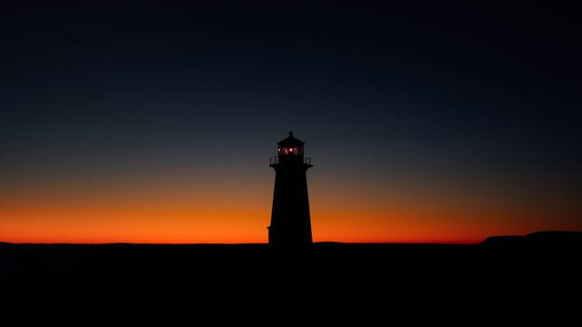

打开《守灯人》的作品页
代表作 · 纪录短片 · 2024
守灯人
The Keeper
海边一座停用的航标塔，最后一位看守人的四季。
- 导演
- 林知夏
- 摄影
- 林知夏
- 剪辑
- 周屿（示例）
- 时长
- 21’05”
- 画幅
- 2.39:1
展映青年影像周 · 纪录单元（示例）
关于
About偏爱现实题材，镜头对准身边的普通人。从前期拍摄到剪辑、调色，都能独立完成。
基本信息
- 方向
- 剧情短片 · 人物纪录片
- 所在
- 河南 郑州
- 合作
- 可接剧情短片、广告的剪辑和调色
经历
- 2025某影视文化公司后期部（示例）剪辑助理
- 2025短片《回南天》导演 / 编剧
- 2024城市电视台青年栏目（示例）摄像 / 剪辑
- 2023纪录片工作坊（示例）跟组摄影
软件与设备
- 剪辑
- Premiere Pro · Final Cut Pro
- 调色
- DaVinci Resolve
- 包装
- After Effects
- 拍摄
- Sony FX3 · 大疆如影